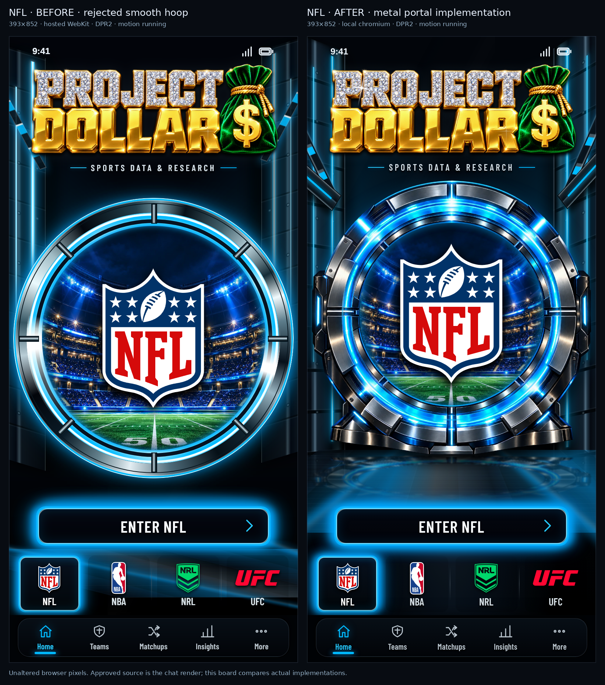
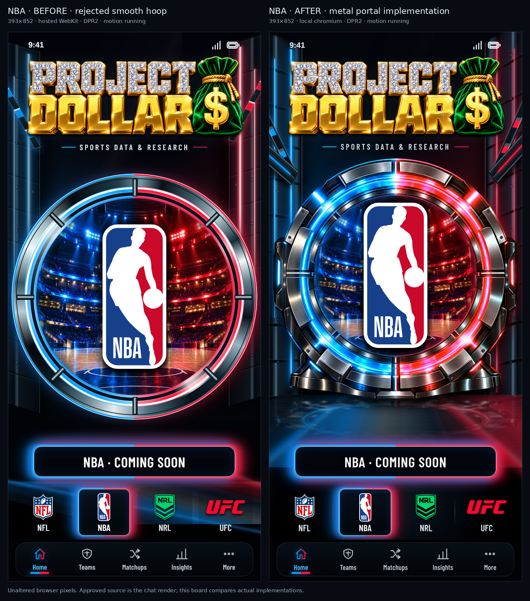
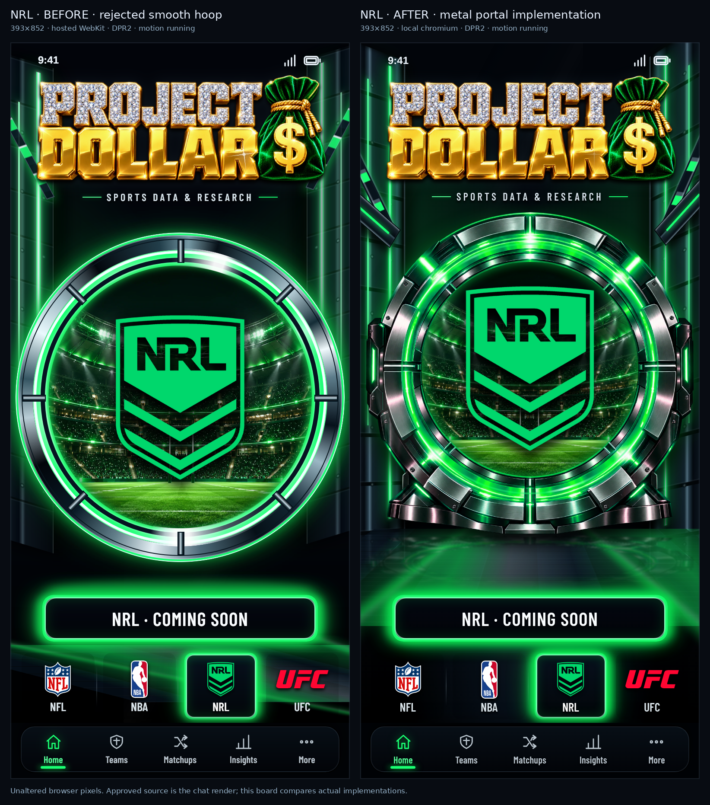
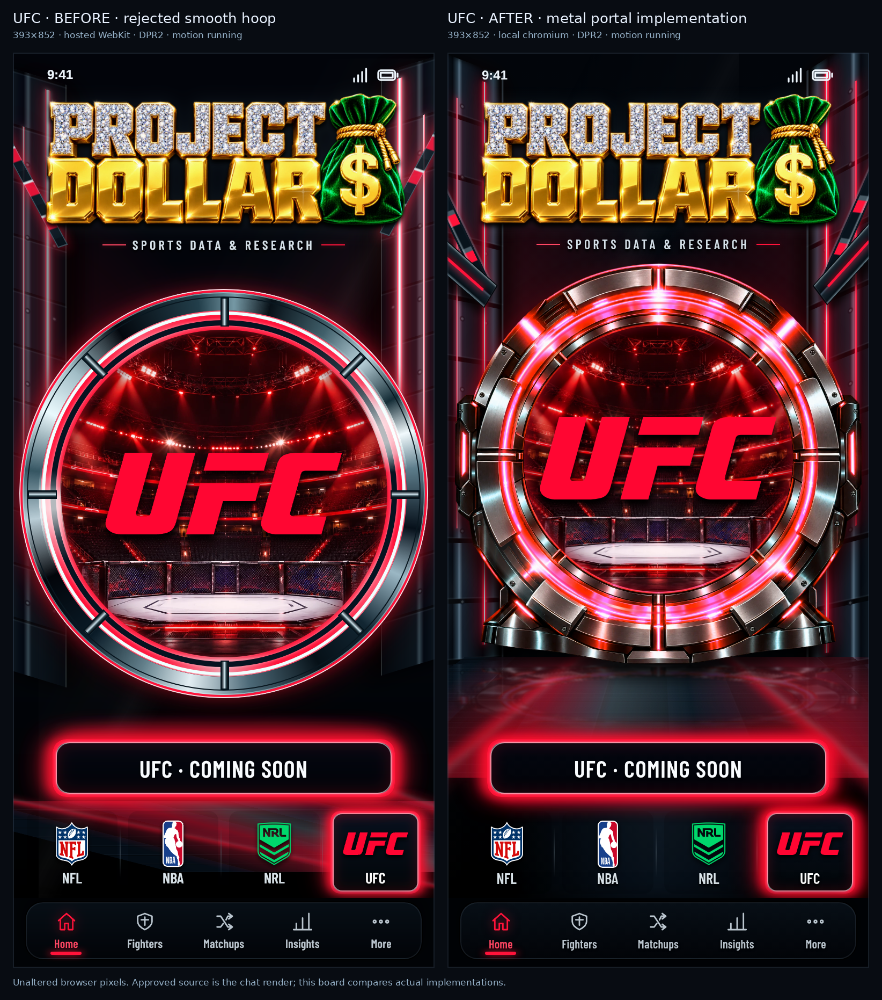
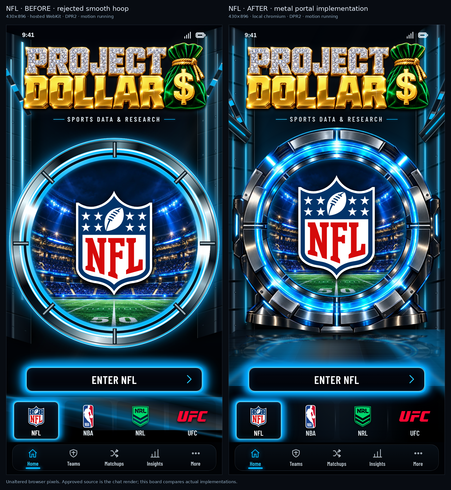
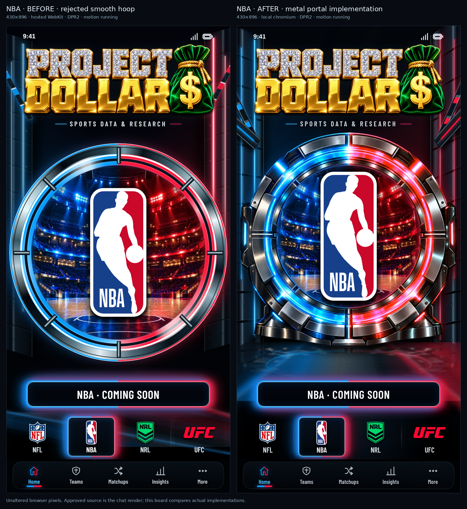
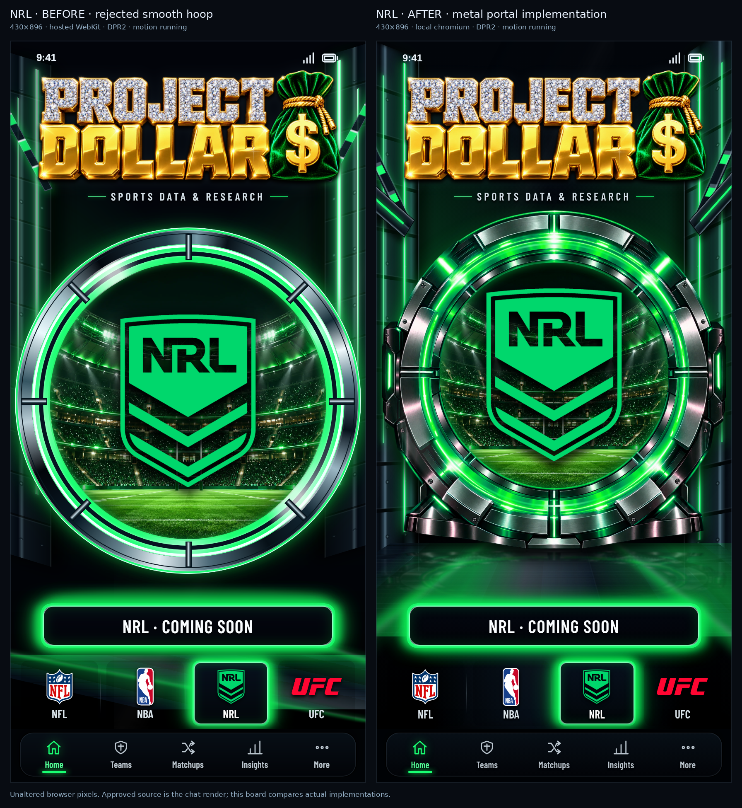
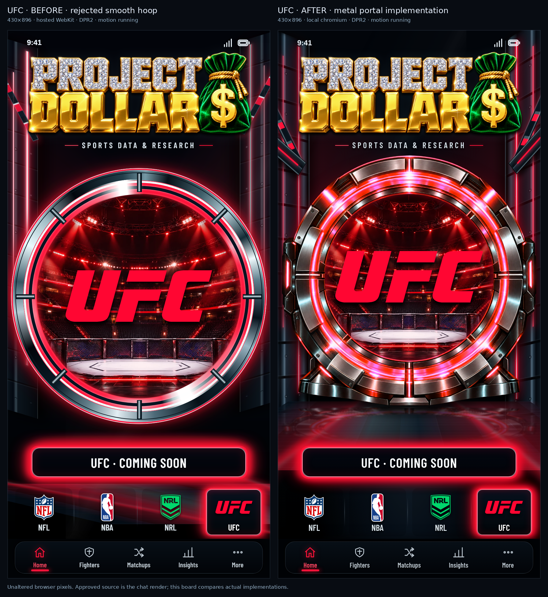

Left: preceding deployed implementation rejected by the user for its smooth thin hoops and weak surrounding environment. Right: current actual metal-portal implementation. Both original Retina screenshots remain unaltered, with motion running. Browser and local/hosted qualifications are labelled on each board.
The approved source remains the reattached four-sport render in chat. Its original bytes are unavailable for a pixel-registered composite; independent design agents compare the actual screenshots against that render. This gallery is actual versus actual evidence and does not independently establish visual acceptance. Source hashes and qualifications.







